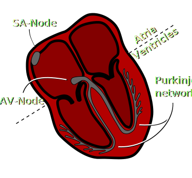
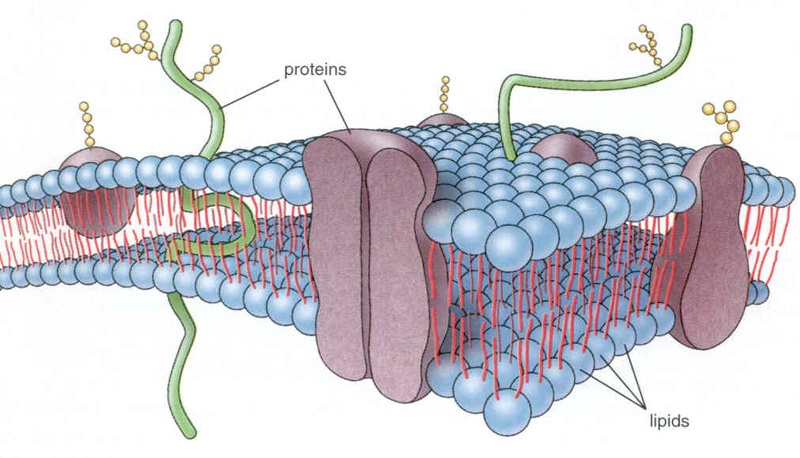
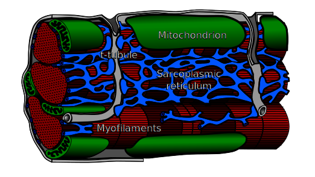
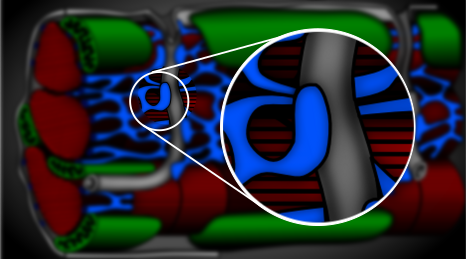
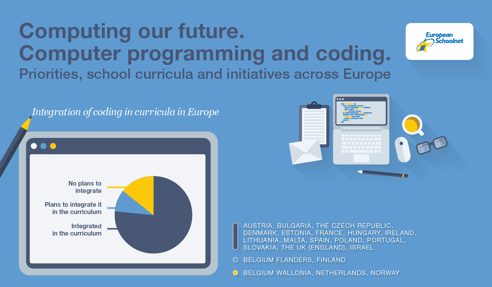
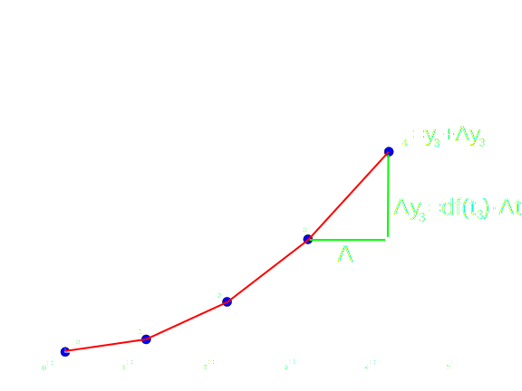

Spennende kombinasjoner av informatikk og andre realfag
29. mars 2016
Hvorfor og hvordan kan programmering kombineres med de andre realfagene
Oversikt
- Hvordan har jeg brukt informatikk og programmering i medisinsk hjerteforskning?
- Hvorfor programmering?
- Kortkurs i matematisk modellering
- Fremtiden?
Først-sak-først: Takk!
- Prof. Andrew McCulloch som veiledet meg under PostDoc oppeholdet i San Diego
- Prof. Hans Petter Langtangen som har vært visjonær mht matematisk modellering og som har fått Olavs Thons formiddlingspris for 2016
- Tidligere kollegaer på Simula Research Laboratory
- Jonas Van den Brink som har utviklet Python koden for strikkhoppet vi seinere skal se på
Hjerte ABC: Hvert hjerteslag startes og synkroniseres av et elektrisk signal

Hjerte ABC: Det elektriske signalet er det vi måler gjennom EKG
Hjerte ABC: I hver celle trigger det elektriske signalet en forsinket sammentrekning
|
|

Hjerte ABC: I hver celle trigger det elektriske signalet en forsinket sammentrekning
|

|
Hvor mye kalsium som kommer ut bestemmes av en komplisert kombinasjon av geometri og kanalfunksjon

- Vi har ikke full kvantiatativ forståelse av hva som kontrollerer hvor mye kalsium som kommer inn i cellen for hvert hjerteslag
Selve kalsiumet kommer inn i cellen i rundt 20 000 ulike områder som er for små til å studeres i fysiologiske eksperimenter

- Gjennom matematisk modellering kan vi gi sykehusene svar på noen spørsmål de ikke kan få svar på gjennom egne målinger
Hvor mye kalsium som kommer ut bestemmes av en komplisert kombinasjon av geometri og kanalfunksjon

Fra et sett med bilder fra et elektronmikroskop lagde jeg en geometrisk modell av et av disse 20 000 områdene
Så ble geometrien forfinet og annoterte med ulike aktive delene
Den geometriske modellen ble så delt opp i flere mindre deler (diskretisert)
Til slutt beskrev jeg selve kalsiumdynamikken med en matematisk modell som ble løst for ulike parameterverdier
Hva fra dette eksemplet er overførbart til bruk av IT og programmering på VGS?
- Som motivasjon til å:
- lære seg programmering
- jobbe med matematisk modellering
- arbeide tverrfaglig
- Sette søkelys på hvilke kunnskaper elevene trenger for å arbeide med matematisk modellering i ulike realfag
Holder det ikke med de digitale ferdighetene slik vi kjenner dem fra grunnleggende ferdigheter i læreplanen?
- Digitale ferdigheter er en altfor generell betegnelse for å dekke behovet av spesifikk programmeringskompetanse
- Det handler om mye mer enn å bare ta digital teknologi i bruk
- Eleven vil forstå mer av den digitale teknologien hvis hen har utviklet den selv
- I tilegg gir programmering eleven kunnskaper om problemløsning, jmf oppgaveløsning/forsøk i andre realfag
Programmering og IT er et lite fag i norsk skole og risikerer å fortsett være det. Men det finnes lyspunkter!

- Helt nytt (1.2.16) forsøk med valgvalg i programmering i grunnskolen
- Lær kidsa kode
Hvordan kan matematisk modellering og programmering integrerers i dagens realfag?
- Vi bruker allerede matematisk modellering i mange fag!
- Men vi tilbyr oftest bare analytiske løsninger
- Bevegelseslikningene for konstant aksellerasjon i fysikk: \( v(t)= v_0 + a\,t;\; s = v_0\,t + a\,t^2/2 \)
- S-kurven for biologiske bestand: \( Y(t)= \frac{M}{1-e^{-rt}} \)
- Kjemisk likevekt: \( \mathrm{K_p=\frac{[NH_3]^2}{[N_2]\cdot[H_2]^3}} \)
- Disse funksjonene og likevektsløsningen er spesialtilfeller av løsninger på differensiallikninger som kommer fra matematisk modellering
- Hvis de skal løses analytisk må forholdene være enkle.
- Forholdsvis enkle numeriske skjema kan brukes for å løse de opprinnelige likningene og i tillegg gjøre dem mer relevante
Løsninger man får fra numeriske skjema skiller seg fra analytiske funksjoner gjennom at vi bare kjenner løsningen på diskrete punkter i tid (og rom)
|
 |
Differensiallikninger finner vi i alle realfag og de kan løses med numeriske skjema som kan implementeres i et program
- Hovedidéen er at vi gjennom differensiallikningen vet hvor mye en funksjon endrer seg når tiden endrer seg litt.
- Hvis \( df(t) \) er en funksjon som gir den deriverte av \( y \), \( \frac{dy}{dt} \), ved tiden \( t \) kan vi skrive:
- \( \frac{dy}{dt}=df(t)\simeq \frac{\Delta y}{\Delta t}=> \)
- \( \Delta y = df(t) \Delta t \). Her er en liten forandring i \( y \), \( \Delta y \) gitt ved en liten forandring i \( t \), \( \Delta t \).
- Hvis vi nå har en liste med \( N+1 \) tidspunkter \( t=[t_0, t_1, \ldots, t_N] \) hvor hvert tidspunkt gis fra det forrige som: \( t_{n+1}=t_i+\Delta t \)
- kan vi formulere den neste funksjonsverdien, \( y_{n+1} \) fra det forrige, \( y_{n} \) gjennom: \( y_{n+1}=y_i+\Delta y_i=y_i+df(t_i) \Delta t \)
- Ofte er den deriverte avhengig av funksjonsverdien: \( y_i=y_i+df(t_i, y_i) \)
- Vi har et numerisk skjema!
Visualisering av det numeriske skjemaet med \( y_i \), \( \Delta y_i \)

- Gitt at vi har regnet ut 3 punkter: \( y_0 \), \( y_1 \), og \( y_2 \)
Visualisering av det numeriske skjemaet med \( y_i \), \( \Delta y_i \)

- kan vi beregne neste verdi gjennom å regne ut \( \Delta y_2 \)
Visualisering av det numeriske skjemaet med \( y_i \), \( \Delta y_i \)

- og legge til \( y_2 \). Vi har nå regnet ut \( y_0 \ldots y_3 \).
Visualisering av det numeriske skjemaet med \( y_i \), \( \Delta y_i \)

- Og vi kan fortsette med neste verdi \( y_4 \). Og sånn går nå dagene...
Prøve ut modellering av et strikkhopp hvor Python programmeringer brukes?
Vi skal prøve å bruke Jupyter-notebook som skal kjøre Python skriptet i nettleseren deres.
- Gå til http://mybinder.org
- Skriv inn "johanhake/strikkhopp" i "Tell us your GitHub repo"
- Trykk på "make my binder"
- Når alle stegene er klare trykker du "launch binder" til høyre
Prøve ut modellering av et strikkhopp hvor Python programmeringer brukes?
Metode 2, hvis den forrige ikke funket...Vi skal prøve å bruke Jupyter-notebook som skal kjøre Python skriptet i nettleseren deres.
- Last ned "index.ipynb" fra http://bit.ly/strikk_hopp og lagre den som "index.ipynb"
- Gå til https://try.jupyter.org
- Gå til Files og velg "open" og så last opp (upload)
- Last opp din fil "index.ipynb" og åpne den